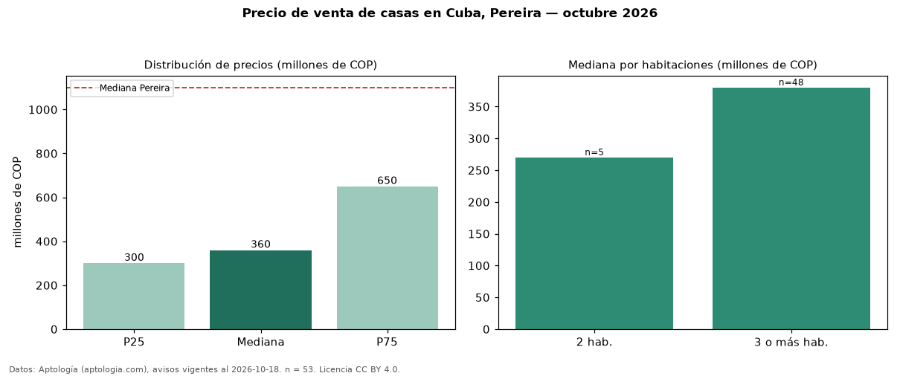

Precio de venta de casas en Cuba, Pereira — octubre 2026
Con 53 avisos vigentes, el precio mediano de casas en venta en Cuba, Pereira es COP 360 millones. Eso es 67 % por debajo de la mediana de Pereira para casas (COP 1,10 mil millones). Por metro cuadrado, la mediana es COP 3,57 millones/m² (n = 51 avisos con área), 14 % por debajo de Pereira (COP 4,17 millones/m²). Por precio mediano es el puesto 22 de 22 barrios de Pereira con al menos 30 avisos de casas en venta (COP): entre las más económicas. El área mediana anunciada es 118 m². El segmento con más oferta es el de 3 o más habitaciones (48 avisos, mediana COP 380 millones); pasar de 2 habitaciones a 3 o más habitaciones cambia la mediana +41 %. La mitad central de los avisos va de COP 300 millones a COP 650 millones (razón 2,2), una dispersión alta. El estrato más frecuente es 3 (47 % de los avisos con estrato). Datos: Aptología (aptologia.com), CC BY 4.0 — https://www.aptologia.com/casas-en-venta/pereira/cuba. Archivos: PDF, CSV con las cifras y gráfica PNG.

| Avisos únicos | 53 |
|---|---|
| Percentil 25 | COP 300.000.000 |
| Mediana | COP 360.000.000 |
| Percentil 75 | COP 650.000.000 |
| Mediana por m² | COP 3.571.428 |
Fuente: avisos vigentes de portales inmobiliarios recopilados por Aptología, deduplicados (mínimo 30 avisos únicos por celda). Precios pedidos, no cerrados. Fecha: 2026-10-18.